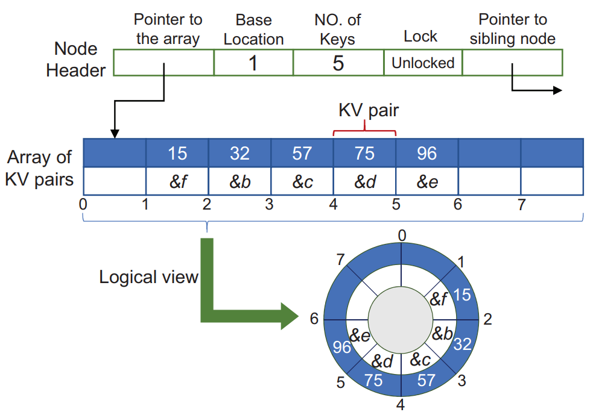

Optimizing B+-Tree for
Byte-Addressable Non-Volatile Memory

In recent years, the next-generation non-volatile memory (NVM) technologies have emerged with
DRAM-like byte addressability and disk-like durability. Computer architects have proposed to
use them to build persistent memory that blurs the conventional boundary between volatile
memory and non-volatile storage.
I was involved in this research when I was a research intern at Singapore University of
Technology and Design (SUTD) where I was part of the ASSET Research Group. The goal
of this research was to optimize B+-trees for
persistent memory. We developed two variants of B+-trees namely Circ-Tree and Crab-Tree.
Publications
- Wang, C., Brihadiswaran, G., Jiang, X., & Chattopadhyay, S. (2021).
Circ-Tree: A
B+-Tree Variant with Circular Design for Persistent Memory. IEEE Transactions on
Computers.
- Wang, C., Chattopadhyay, S., & Brihadiswaran, G. Crab-tree: A Crash
Recoverable
B+-tree Variant for Persistent Memory with ARMv8 Architecture. ACM Transactions
on Embedded Computing Systems (TECS).
- Wang, C., Chattopadhyay, S., & Brihadiswaran, G. (2019, June). Crash
recoverable ARMv8-oriented B+-tree for byte-addressable persistent memory. In Proceedings
of the 20th ACM SIGPLAN/SIGBED International Conference on Languages, Compilers, and
Tools for Embedded Systems (pp. 33-44).